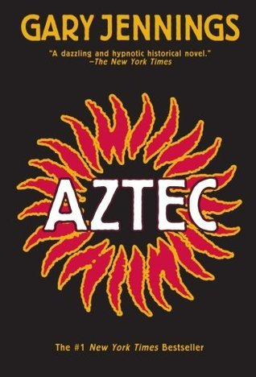

Blog de Libros
Tres lecturas que nos hicieron pensar, imaginar y resistir.
Nuestras lecturas

1984
George Orwell
Novela distópica
Para quienes quieren pensar sobre el poder y la libertad
Winston Smith vive en un país donde el Gran Hermano lo vigila todo y el Estado reescribe la historia a su conveniencia. La novela nos hace preguntarnos qué pasa con la verdad y con la libertad cuando alguien controla la información.

Azteca
Gary Jennings
Novela histórica
Para quienes amamn las historias largas y llenas de aventura
Esta novela cuenta la vida de Mixtli, un hombre mexica que narra su historia en tiempos de Tenochtitlan y de la llegada de los españoles. Mezcla aventura, costumbres y vida cotidiana de ese mundo.
El hombre en busca de sentido
Viktor Frankl
Ensayo y testimonio
Para quienes buscan una razón para seguir adelante
Viktor Frankl, psiquiatra, relata lo que vivió en los campos de concentración y explica por qué encontrar un sentido puede ayudarnos a resistir hasta en las circunstancias más difíciles.